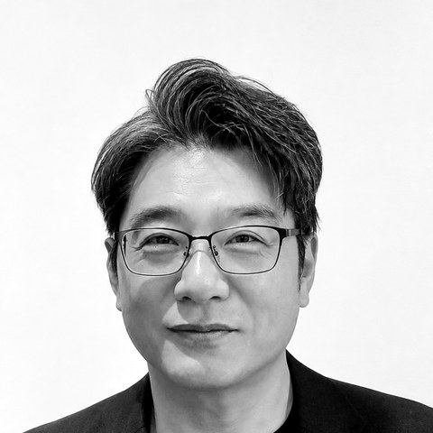
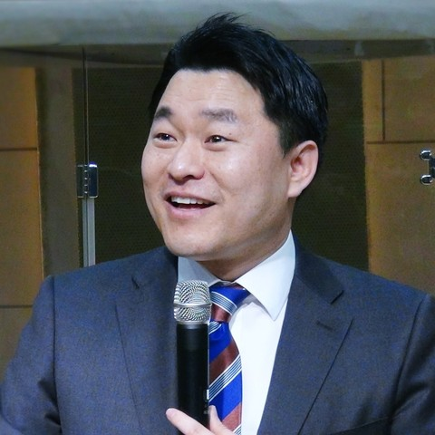
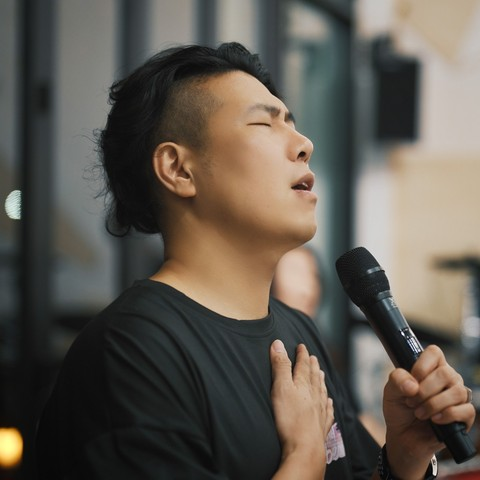
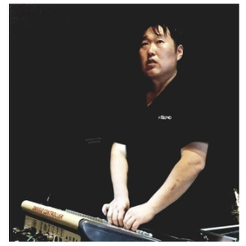

은혜교회 담임목사로 목회, 방송사역과 CCM 보컬리스트로도 활동하고 있습니다. GIVEN MINISTRY의 책임간사는 행정적 원활함과 대외 협력을 위한 역할일 뿐, 공동체의 수장을 의미하지 않습니다. 책임간사직은 고정된 자리가 아니라 프로젝트와 기한에 따라 운영위원회의 논의를 거쳐 순환 임명됩니다.



고정 멤버와 자율 참여 멤버로 구성되어 있으며, 각자의 방식으로 함께 사역합니다.